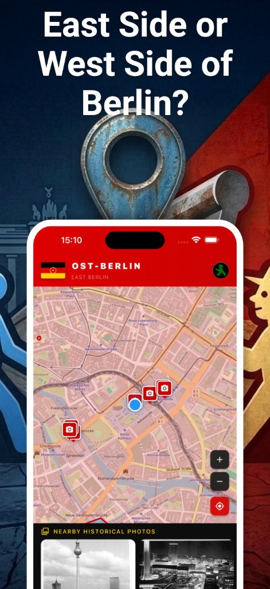
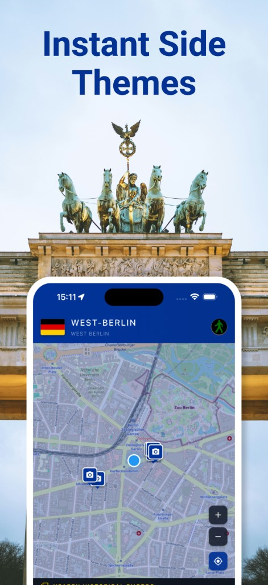
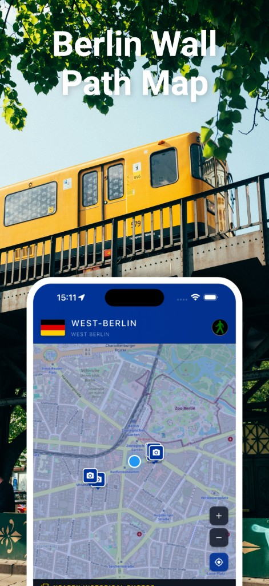
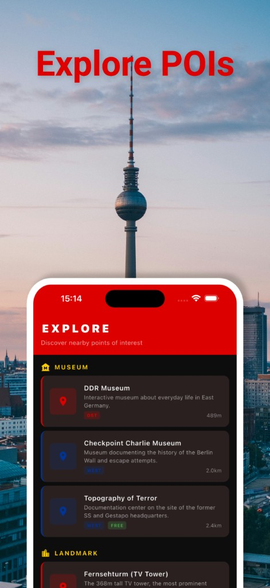
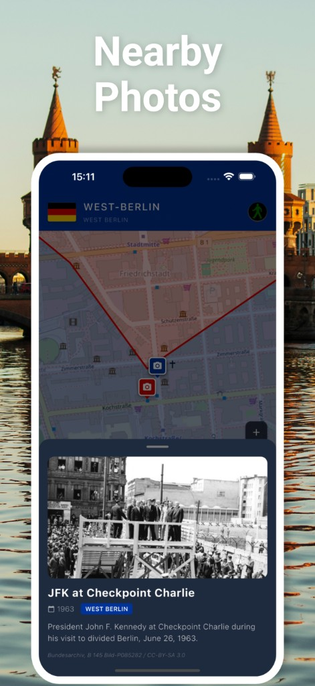
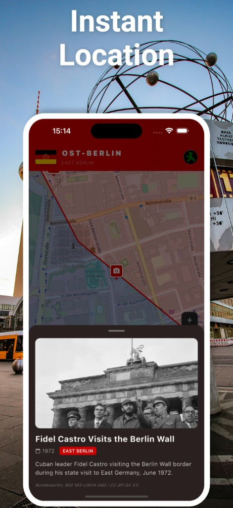

GPS
Instant Side Detection
Uses your location to detect whether you are in East or West Berlin context.
Berlin Wall Explorer uses GPS and map intelligence to instantly detect East/West side context, find nearby historical photos, and discover points of interest in Berlin.
Built for walking through Berlin with historical context in real time.
Uses your location to detect whether you are in East or West Berlin context.
Shows historical photographs near your position on the map.
Lists museums, memorials, landmarks, and viewpoints around you.
Switches visual theme based on Berlin side state.
Real UI captures from the app.





